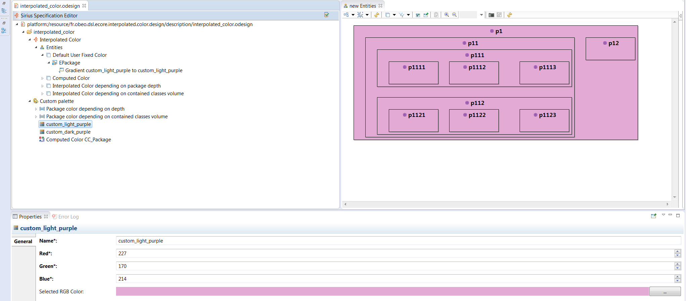
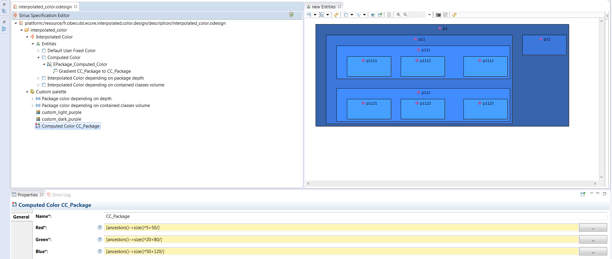
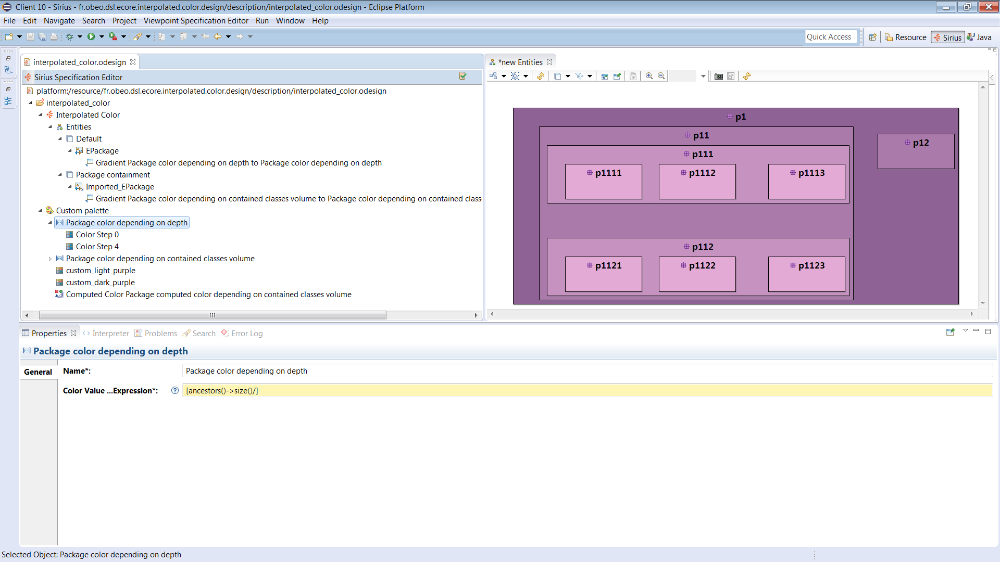
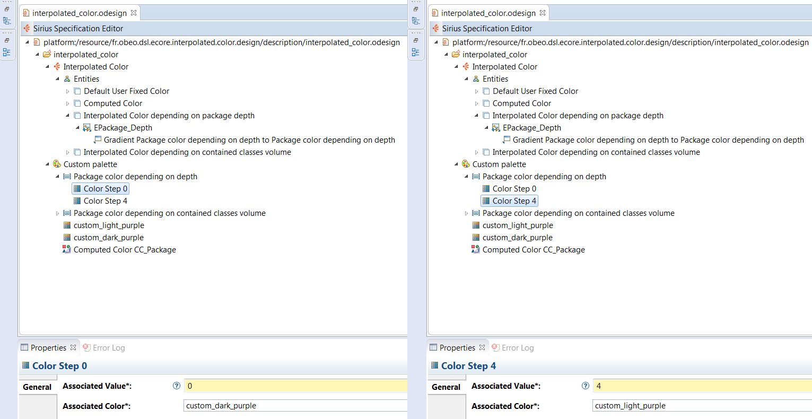
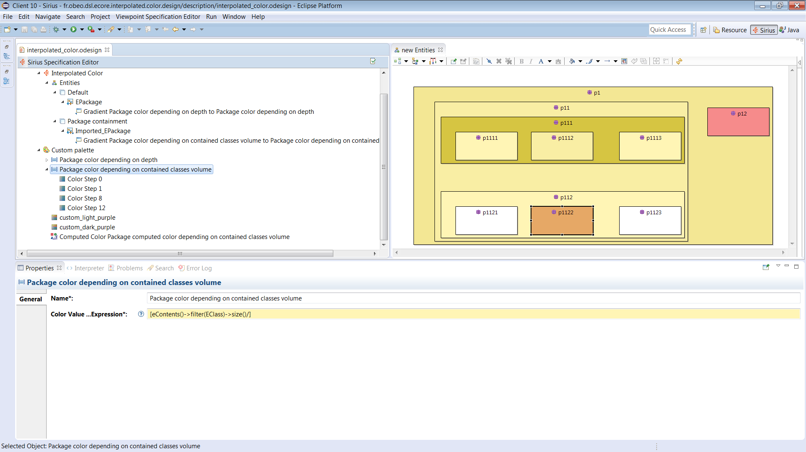

This article is part 4 of a series covering cool features of Sirius and tips to create advanced modelers. See http://melb.enix.org/category/sirius/ for the complete series.
Today we will present how diagrams can be refined to display information using interpolated colors.
In your Viewpoint Specification Model (VSM), the specifier is not limited to use the provided colors but can define a palette with custom colors. A color can be defined using a RGB code (Red/Green/Blue).

However, using this new color in a mapping will paint every mapping candidates to this color. As our goal is giving colors a meaning, it needs to be defined by an expression. Sirius provides two solutions: Computed Colors and Interpolated Colors.
Note that RGB codes are defined with three integer values between 0 and 255. If the value is over 255, Sirius will use it as a 255 value.
Computed colors are alike RGB Colors but instead of choosing an int value for the Red/Green/Blue fields, an expression will be given.

On this sample the color is computed depending on the depth of the package to represent. As this information is far from a RGB value transposition, the expressions are unfortunately not really natural to write. The Interpolated Colors will offer a more natural conversion.
An Interpolated Color is defined by an expression and several Color Steps. The expression should return an integer value. Here is an example where the expression calculate the depth of the current element using the ancestors() service.

A Color Step is the association of a color and an integer value. Note that the color selection is not limited by the provided color, but can also be a custom color. In this sample, the selected colors are RGB Colors.

Depending on the return value of the expression, a color will be created between the defined Color Steps. As close the return value is of a Color Step, as close the result color will be to this Color Step.
On the previous example, the interpolated was used in order to display EPackage element with a graduation of color depending on the depth because both steps where different tint of a similar color. Of course, the Color Steps can be of different colors and the number of steps is not limited.
On the next example, we want to present the EPackage again but this time the yellow color graduation will depend on the number of contained EClasses. Moreover, we decide that for future refactoring/cleaning purpose, the empty EPackage should be white. Furthermore, the recommended EPackage size is between one and eight EClasses and should be displayed yellow with a tint darker the more contained EClasses there are. Twelve or more EClasses is seen as too many and should be displayed as red. To represent this as an Interpolated Color we have:
[eContents()->filter(EClass)->size()/];
On this sample:
Interpolated colors are an easy way to display meaningful information and an alternative from text display. Furthermore it can produce beautiful diagrams using nice colors that can be created using simple tools like www.colourlovers.com or colourco.de.
The sample code from this example is available on github: https://github.com/mbats/sirius-blog/tree/master/interpolated-colors